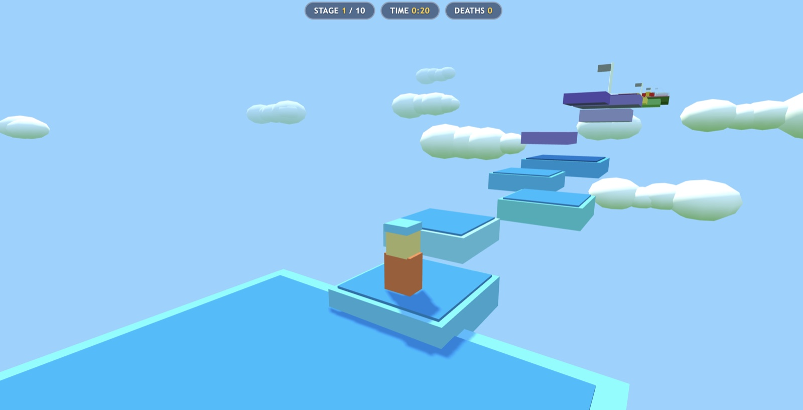

8 October 2026 · Agentic game · third-person platform course
Obby 3D · Splash 1.3.0
Built the ten-stage Obby 3D game. The final retained headless movement simulation completed the course in 36.4 seconds with zero deaths.

What was checked
- Pi recorded 334 successful Splash assistant responses, 332 tool calls, and 9 context compactions in the selected session.
- The final recorded `node test/sim.js` trial reports PASS: completed in 36.4 s, 0 deaths, 0 respawns, maxStage=10. Earlier simulator trials failed at several waypoints while movement logic was being revised.
- This was a custom headless physics simulation. No independent browser, manual gameplay, or touch-device acceptance run was retained.
- One assistant response ended with stopReason=length at 16,384 output tokens; the selected session contains no assistant request errors.
Limits of this evidence
Splash 1.3.0 CLI version was confirmed. The server startup log reports Qwen3.8-27B-Splash at 256K context and an active Neural Engine FFN split (share 0.38, chunks >=512 rows). Calibration took 31.2 s and measured 26.8 ms per 2048-row FFN layer against 37.9 ms with GPU alone; this is a startup calibration measurement, not end-to-end prompt speedup. The ANE program reloaded in 0.07 s and model weights were restored in 1.29 s before the selected session’s first response. Splash logged TTFT and decode rate but no standalone prefill tokens/s, MTP counters, or peak memory. Only one matched request had zero cached tokens and it contained 1,651 prompt tokens; this run does not reproduce the release’s 14K cold-prompt comparison or its controlled shared-prefix case. The engine max-context was 262,144; no immutable Pi client-context setting was retained. OS build and power mode were not measured.
Configuration
The model, serving engine and agent used for this execution.
| Field | Value | Detail |
|---|---|---|
| Model · primary | Qwen 3.8 27B · primary · reasoning medium | Splash-packed Q4 affine, group size 64 (confirmed by local model manifest) · 4 bpw |
| Runtime | Splash 1.3.0 · Local server; Neural Engine FFN split active mode | inference engine and exact build |
| Harness | Pi coding agent | the agent or client that drove the run |
| Hardware | Apple MacBook Pro · 64 GB unified memory | hardware recorded for this execution |
| Workload | Obby 3D · revision 1 | Same byte-identical challenge prompt as the 2026-10-07 Sushi attempt. One selected Pi coding-agent session. A separate earlier three-response Pi session in the same project is excluded. |
| Context window | 262,144 tokens | maximum context configured for the serving runtime |
| Repetitions | 1 | executions recorded for this workload; one means an indicative result, not an estimate |
Inference measurements
Engine-side rates for this run. Each figure states its own statistic; figures from different runs are not interchangeable.
| Metric | Value | Definition |
|---|---|---|
| Decode · per-request median | 36.9 tok/s | Median of Splash-reported per-request decode rates; log values rounded to 0.1 tokens/s · n=334 |
| Decode · output-weighted | 35.49 tok/s | Total matched output tokens / sum of per-request output tokens divided by reported decode rate; rates rounded to 0.1 tokens/s · n=334 |
| TTFT · median | 5.7 s | Median of Splash-reported per-request time to first token; log values rounded to 0.1 s · n=334 |
| TTFT · mean | 12.5 s | Mean of Splash-reported per-request time to first token; log values rounded to 0.1 s · n=334 |
| TTFT · maximum | 116.9 s | Maximum Splash-reported per-request time to first token · n=334 |
| TTFT · cached median | 5.7 s | Median Splash-reported TTFT among requests with cached prompt tokens; log values rounded to 0.1 s · n=333 |
| Cache hit ratio | 95.53 % | Splash-reported cached prompt tokens / total prompt tokens across matched requests · n=334 · 23,586,304 of 24,689,544 prompt tokens were logged as cached; 333 of 334 requests had cached tokens. |
Agent session counters
Agent-wide usage totals. These include reasoning, tool calls and waiting, and are not model decode speed.
| Metric | Value | Definition |
|---|---|---|
| Model responses | 334 responses | Successful assistant model responses in the selected Pi session · n=1 |
| Session elapsed | 444.4 min | Selected Pi session start to final assistant response; includes coding, tools, and waiting · n=1 |
| Model request errors | 0 errors | Assistant responses ending with an API/request error in the selected Pi session · n=1 |
| Tool calls | 332 calls | Tool results recorded in the selected Pi session · n=1 |
| Context compactions | 9 compactions | Pi context compaction events in the selected session · n=1 |
| Matched model requests | 334 requests | Exact unique in-order match on total prompt, output, and cached token counts · n=1 |
Context and token counters
Token totals as reported by the harness or engine. Cached and cumulative figures are not additive with fresh input.
| Metric | Value | Definition |
|---|---|---|
| Fresh input | 1,103,240 tokens | Sum of Pi input counters across successful assistant responses · n=1 |
| Cached input | 23,586,304 tokens | Sum of Pi cacheRead counters across successful assistant responses · n=1 |
| Pi cached-input share | 95.53 % | Pi cacheRead / (input + cacheRead), aggregated over the selected session · n=334 · Agent-side cached input share; not a cold-prefill result. |
| Output tokens | 620,944 tokens | Sum of Pi output counters across successful assistant responses · n=1 |
| Maximum prompt context | 114,497 tokens | Maximum Pi input plus cacheRead tokens in one assistant request · n=1 |
Request records & provenance
All 334 successful Pi responses match Splash server summaries uniquely and in sequence: Pi input + cacheRead = Splash input; Pi cacheRead = Splash cached; output counts are equal. The shared server log contains 347 summaries: 3 belong to a separate earlier three-response session and 10 more remain unassigned; all 13 are excluded. Request records contain numeric counters, Splash-reported TTFT and rounded decode rate only.
Run ID: 2026-10-08-qwen38-27b-splash-v130-obby-3d
One execution, with checks transcribed from the retained record. A completed session is not a quality score. Measurement method · All runs